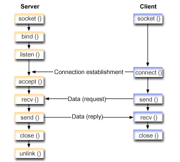

Network Programming
Introduction
The Internet is all about connecting machines together. One of the most exciting
aspects of Java is that it incorporates an easy-to-use, cross-platform model for
network communications that makes it possible to learn network programming
without years of study. This opens up a whole new class of applications to
programmers.<
What is a Socket?
Sockets are a means of using IP to communicate between machines, so sockets are
one major feature that allows Java to interoperate with legacy systems by simply
talking to existing servers using their pre-defined protocol.
Internet Addresses
Internet addresses are manipulated in Java by the use of the InetAddress class.
InetAddress takes care of the Domain Name System (DNS) look-up and reverse
look-up; IP addresses can be specified by either the host name or the raw IP
address. InetAddress provides methods to getByName(),getAllByName(),
getLocalHost(),getAddress() etc.
Socket Functions
